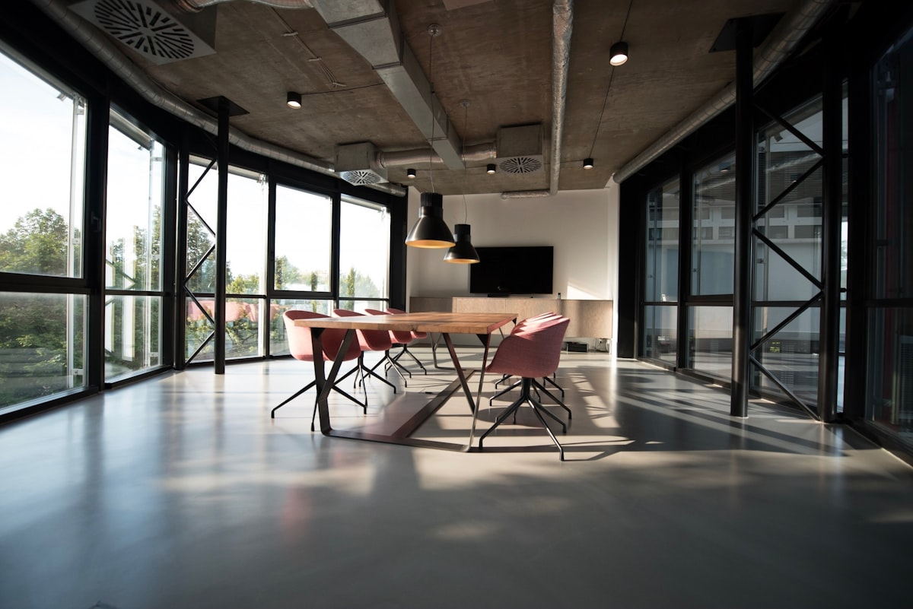

Taller
J.Suarez Carpintero es un taller con sede en Madrid dedicado a diseñar y fabricar mobiliario a medida, revestimientos y piezas especiales en madera con procesos artesanales y control técnico.

Filosofía de trabajo
Cada proyecto nace del entendimiento del espacio, las texturas y los hábitos del usuario. Seleccionamos maderas certificadas y acabados responsables para garantizar piezas duraderas.
Trabajamos planos y prototipos en conjunto con el cliente, asegurando precisión milimétrica antes de pasar a fabricación.
Equipo y alianzas
El taller está liderado por José Suárez junto a un equipo de maestros carpinteros, barnizadores y diseñadores industriales que integran tecnología CNC y trabajo manual.
Compromiso
Precisión en cada ensamble, cumplimiento de plazos y montaje limpio en obra.